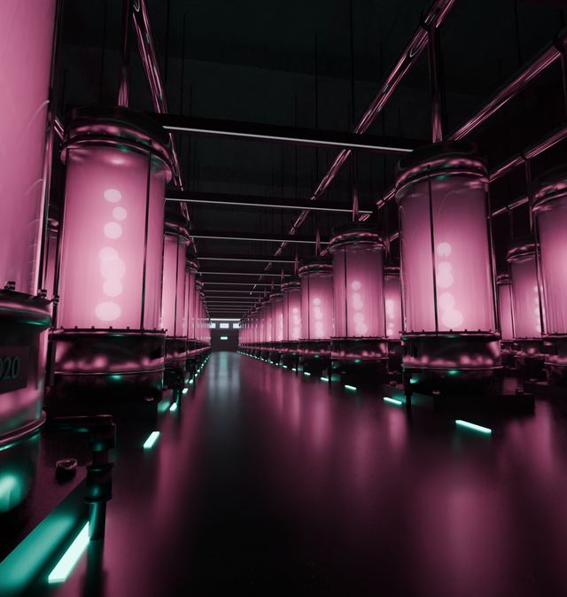

戻る
CORE NO.37
h!ro53 / transcendence by deus ex machina

炉室を準備しています
もう一度読み込む
メニュー
操作を表示
© 2026 h!ro53 · transcendence by deus ex machina — viewing permitted, reuse prohibited
この作品の表示にはJavaScriptが必要です。ブラウザの設定を確認してください。